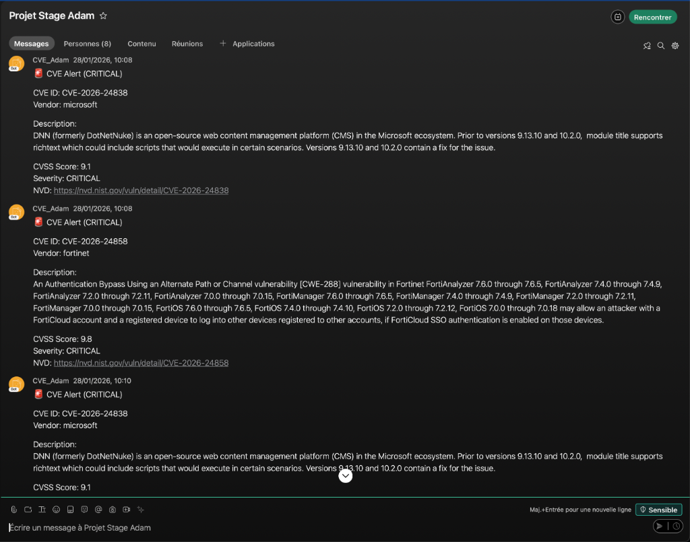

Elit-Technologies est une ESN (Entreprise de Services du Numérique) bénéficiant de plus de 18 ans d'ancienneté, spécialisée dans l'IT, la cybersécurité, les réseaux, la téléphonie IP et les services managés.
PRÉSENTATION DE L'ENTREPRISE
IDENTIFICATION
| Dénomination | Elit-Technologies |
|---|---|
| Adresse | 14 Rue du Sergent Bobillot, 92400 Courbevoie — La Défense, France |
| Forme juridique | Société par Actions Simplifiée (SAS) |
| Taille | PME |
| Effectif | Plus de 60 collaborateurs |
| Secteur d'activité | ESN — IT, Cybersécurité, Réseaux, Téléphonie IP/TOIP, Support informatique, Services managés |
HISTORIQUE
Date de création : 2 juillet 2007.
L'entreprise a été créée pour accompagner les organisations dans leur transformation digitale et la gestion de leurs infrastructures IT.
Depuis sa création, Elit-Technologies a progressivement étendu ses activités, notamment en cybersécurité et en services managés, devenant aujourd'hui une ESN complète reconnue pour son expertise multi-domaines.
RGPD — PROTECTION DES DONNÉES
Sur le site de l'entreprise, il existe une politique de confidentialité et des mentions légales conformes à la réglementation française et européenne.
ORIENTATIONS STRATÉGIQUES
- Cybersécurité : Renforcement de la protection des systèmes d'information avec des solutions SOC (Security Operations Center) et NOC (Network Operations Center).
- Réseaux : Développement de solutions réseau complètes — switching, routage, firewall, Wi-Fi, SD-WAN, SASE.
- Téléphonie IP (ToIP) : Offres modernes et intégrées au système d'information.
- Digital Workplace : Soutien au travail collaboratif et à la visioconférence — solutions cloud, Microsoft 365, outils de productivité.
- Services managés : Support proactif 24/7 avec un objectif d'accompagnement complet du SI des clients.
RSE — RESPONSABILITÉ SOCIÉTALE
Elit-Technologies mentionne des engagements autour de trois axes principaux :
- Environnement : Réduction de l'impact environnemental via des solutions responsables et des partenariats vertueux.
- Bien-être des employés : Promotion d'un environnement de travail inclusif et favorable.
- Technologies responsables : Intégration d'outils numériques éthiques et sécurité des données.
ANALYSE SWOT
💪 Forces
- Expertise complète IT : cybersécurité, réseau, cloud, téléphonie IP, digital workplace.
- Positionnement ESN avec services managés et SOC/NOC.
- Partenariats technologiques solides (Cisco, Microsoft, AWS, etc.).
⚠️ Faiblesses
- Taille moyenne (~60+ employés), ressources limitées face à de très grandes ESN.
- Peu de données publiques sur la RSE détaillée ou la conformité RGPD formalisée.
🚀 Opportunités
- Croissance de la cybersécurité et de la demande de services managés.
- Adoption accrue du travail hybride et des solutions collaboratives (visioconférence, cloud).
🔥 Menaces
- Concurrence forte dans le secteur des ESN et des intégrateurs IT (grands groupes internationaux).
- Évolution constante des cybermenaces nécessitant une adaptation permanente.
PROJET RÉALISÉ EN STAGE
Durant mon stage chez Elit-Technologies, j'ai conçu et développé un script Python permettant de récupérer en temps réel les dernières CVE critiques (Common Vulnerabilities and Exposures) publiées en ligne, puis de les diffuser automatiquement dans une room Webex dédiée à l'équipe.
🎯 Objectifs
- Améliorer la réactivité de l'équipe face aux vulnérabilités critiques affectant les systèmes des clients.
- Centraliser les alertes CVE dans un canal de communication unique (Webex) pour une meilleure gestion interne.
- Automatiser la veille sécurité en remplaçant une vérification manuelle par un processus automatisé et fiable.
🛠️ Moyens utilisés
- Python — Langage utilisé pour le développement du script console.
- API Auvik / NVD (NIST) — Récupération des CVE critiques publiées en temps réel via des appels API.
- API Webex — Envoi automatique des alertes formatées dans une room Webex dédiée.
⚡ Difficultés rencontrées
J'ai rencontré plusieurs défis durant ce stage, notamment :
- Compréhension de la documentation API : La documentation de l'API Auvik étant rédigée en anglais et très technique, j'ai dû consacrer du temps à comprendre la structure des requêtes et le format des réponses JSON renvoyées.
- Découverte de l'environnement cybersécurité : Le vocabulaire et les concepts liés aux CVE, scores CVSS et bases NVD étaient nouveaux pour moi. Il m'a fallu me former rapidement pour bien comprendre les données que je manipulais.
- Gestion des erreurs API : J'ai dû apprendre à gérer les cas où l'API ne répondait pas correctement (timeout, erreurs de connexion, limites de requêtes) afin de rendre le script fiable en production.
- Organisation et gestion du temps : Travailler en autonomie sur un projet complet m'a demandé de mieux structurer mon travail, de prioriser les tâches et de respecter les délais fixés par mon tuteur.
Pour surmonter ces difficultés, j'ai sollicité l'aide de mes collègues, consulté régulièrement la documentation officielle et utilisé l'intelligence artificielle comme outil d'amélioration continue de mon projet — que ce soit pour clarifier des concepts techniques, optimiser la structure de mon code ou identifier des bonnes pratiques que je n'aurais pas trouvées seul aussi rapidement.
✅ Résultats obtenus
- Le script envoie automatiquement dans la room Webex les CVE critiques avec leur identifiant, le vendeur concerné, la description, le score CVSS, la sévérité et un lien vers le NVD.
- L'équipe dispose désormais d'un flux d'alertes centralisé, permettant une prise en charge plus rapide des vulnérabilités affectant les clients.
- Le processus de veille sécurité est passé d'un contrôle manuel à une automatisation complète.
📸 Aperçu visuel des projets

Room Webex — Réception des alertes CVE critiques en temps réel

NVD (NIST) — Page de détail d'une CVE critique récupérée par le script
CONCLUSION
Ce stage a été une étape importante dans mon parcours. J'ai pu mettre en pratique mes compétences tout en découvrant de nouvelles technologies. J'ai découvert de nombreux aspects de la vie d'un développeur, et remarqué que cela ne se limite pas simplement à du développement, mais bien à de la recherche, de l'organisation, de la communication et enfin de la programmation.
Cette expérience m'a également permis de mieux comprendre l'importance de la collaboration et de l'adaptabilité dans un environnement professionnel. Je suis convaincu que les compétences et les leçons apprises durant ce stage me seront précieuses pour mes futures expériences professionnelles.